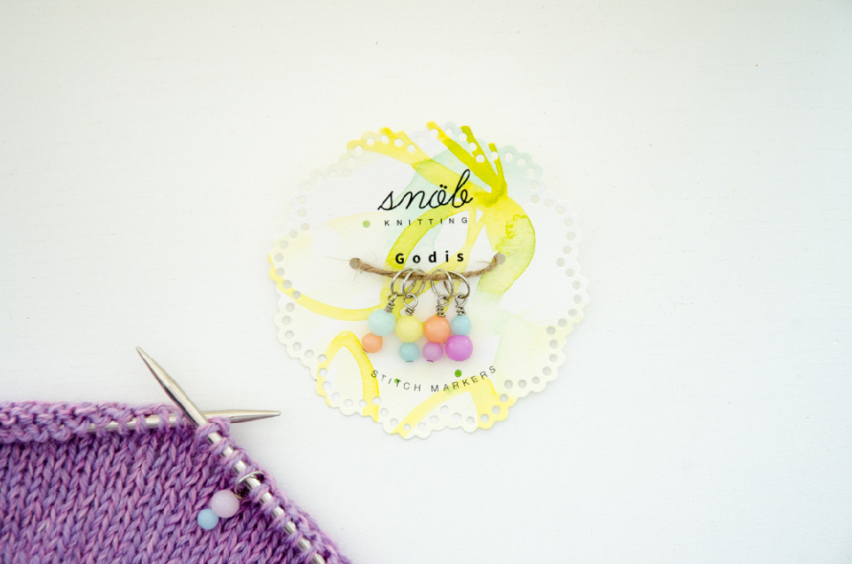

Snöb Knitting
Branding
Snöb Knitting er et dansk/svensk strikkedesigner-partnerskab baseret i Danmark. De designer og håndlaver strikkemønstre og accessories.
Den røde tråd i deres brand er håndværk, kvalitet og feminin, nordisk minimalisme.

Jeg udviklede et logo til dem, der visuelt udtrykker de værdier, snöb ønsker at formidle: Kreativitet, jordnærhed, leg og lethed.
Navnetrækket er lavet, så det ligner, at det er skrevet med en tråd garn. Den simple undertitel giver en følelse af luft og modernitet.
Der blev designet kvadratiske stoflabels til påsyning på de håndlavede produkter og emballage til de mindre strikke-accessories.

Et simpelt visitkort, der kan vedlægges ordrer.
Jeg stod også for fotografering af produkter og layout af strikkeopskrifter.